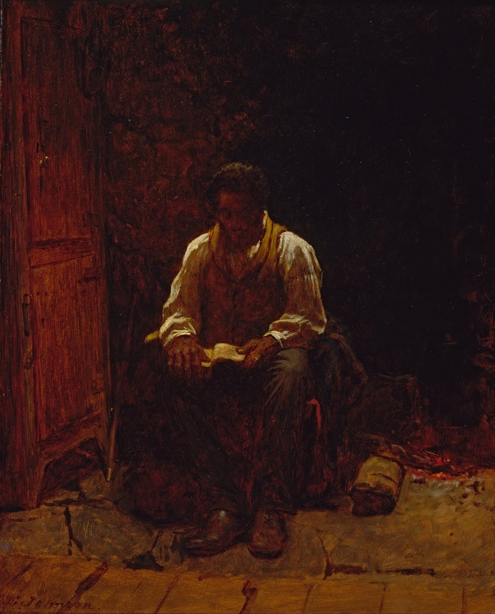

Salmo 23 — La Traducción Mister

⚠ El cuadro se titula con este salmo y no contiene nada de él: ni pastor, ni pastos, ni barranco, ni mesa, ni enemigos. Un hombre sentado a solas en un cuarto oscuro con un libro, y la única luz del cuadro cae sobre la página que lee. Johnson lo pintó en 1863, el año de la Proclamación de Emancipación; el bulto en que se apoya es una casaca azul, leída normalmente como servicio en el ejército de la Unión, y el libro está abierto cerca del principio, por lo que el museo sugiere que quizá esté en Éxodo y no en los Salmos. Leer era justamente lo que se le había negado — enseñar a leer a una persona esclavizada era delito en buena parte del Sur —, de modo que el tema es la alfabetización y el salmo es el título. ⚠ Es además mucho más pequeño de lo que parece en fotografía: óleo sobre tabla, 42 × 33 cm.
{kind=link}
Jehová es mi pastor; nada me falta.nota
שִׁבְטְךָ וּמִשְׁעַנְתֶּךָ, הֵמָּה יְנַחֲמֻנִי.
Notas del traductor — versículo por versículo
Cada nota explica la decisión de esta traducción y la compara con el estante en español: la TNM (Traducción del Nuevo Mundo), la Reina-Valera en su recorrido de registro (RV 1909 arcaica ↔ RV60 moderna) y la NVI. Las citas de versiones con derechos reservados se limitan a frases cortas.
El encabezamiento. Mizmor le-David: un mizmor es un canto acompañado de instrumento de cuerda (raíz zamar, pulsar). El prefijo le- sobre el nombre de David significa a la vez de, por, para y perteneciente a; setenta y tres salmos lo llevan. Es un encabezamiento, no una firma, y esta biblioteca lo transmite como lo que es sin zanjar lo que el hebreo deja abierto.
⚠ «Pastor» es una palabra política, no campestre. En todo el Cercano Oriente antiguo pastor era el título corriente del rey. El primer verso no expresa, pues, una ternura pastoril: afirma quién gobierna al que habla. Así lo usa Jeremías 23:1, ya en estas páginas: «¡Ay de los pastores que destruyen y dispersan el rebaño de mi pasto!», dicho a los reyes de Judá. Jeremías 23 y el Salmo 23 son la misma metáfora discutida desde extremos opuestos.
Y la línea que casi todos oyen mal. Lo echsar es el verbo chaser, faltar, quedarse corto de algo. La RV 1909 dice «nada me faltará» y acierta de lleno; el inglés antiguo del KJV («I shall not want») hoy se oye como «no desearé», casi lo contrario. Aquí el español tiene ventaja sobre el inglés: faltar nunca dejó de significar lo que significa. La TNM coincide: «Nada me faltará».
No me deja recostarme: me hace recostarme. Yarbitzeni es el causativo (hifil) de ravats, el verbo propio del animal que dobla las patas y se echa al suelo. No habla de permiso ni de ocio, sino de un pastor que hace echarse al rebaño. La TNM lo conserva —«me hace reposar»— igual que la RV 1909 con su «me hará yacer», que es aún más físico.
⚠ Los pastos son más verdes en la traducción que en el hebreo. Ne'ot deshe son «pastos de deshe», y deshe es el primer brote tierno tras la lluvia, no la hierba en general; mei menuchot es literalmente «aguas de lugares de reposo» (menuchah, descanso). La RV 1909 ambienta con «delicados pastos»; la TNM desarma la frase en «prados cubiertos de hierba… lugares de descanso donde abunda el agua», más torpe y más exacta. Esta traducción nombra el detenerse, que es lo que dice el hebreo.
En esta frase no hay ningún alma. Nefesh es la garganta, el aliento, el apetito, la vida, el ser entero —la criatura viva completa, no una parte inmaterial alojada dentro de ella—. Y yeshovev es el polel de shuv, hacer volver. Lo que dice el verso es concreto: a alguien que llegó al final de sí mismo se le hace volver. De ahí «me hace volver la vida».
⚠ Y aquí las dos estanterías se parten por la mitad sobre la misma palabra. La RV 1909 lee «Confortará mi alma»; pero la TNM suprime el sustantivo y lee «Renueva mis fuerzas» —mientras que la NWT inglesa de 1984, de la misma tradición, conserva «My soul he refreshes». Una misma tradición, dos idiomas, decisiones opuestas sobre nefesh. Ese desacuerdo es la mejor prueba disponible de que la palabra es genuinamente difícil. Aquí se sigue a la TNM por exactitud, no por costumbre —aunque conviene decir también que su elección coincide con una postura doctrinal propia sobre el alma, y el lector merece saberlo.
Las sendas son rodadas. Ma'gal es una rodada de rueda (raíz agol, redondo): un surco abierto por el tránsito anterior, no una abstracción moral. De ahí «sendas trilladas». Lema'an shemo —«por causa de su nombre»— es el shem que esta biblioteca sigue desde Babel (Génesis 11:4) y desde la promesa a Abram (12:2), pasajes todavía no traducidos a estas páginas en español.
⚠ Aténgase a esta raíz: shuv se planta aquí y se cobra en el último verso —véase el versículo 6.
⚠ El hecho estructural del salmo, que ninguna traducción muestra porque nada está mal traducido. Los versos 1–3 hablan de Dios en tercera persona: él me hace recostarme, él me conduce, él me hace volver la vida. En el verso 4 el poema pasa a la segunda persona —«porque tú estás conmigo… tu vara y tu cayado»— y ya no vuelve atrás. El giro ocurre en el centro exacto del salmo, y ocurre a oscuras: en el peor momento el que habla deja de describir a Dios y empieza a hablarle.
Un barranco, no un valle. Gei es una quebrada estrecha con paredes, no un valle abierto: el peligro del lugar es que es angosto y no se ve lo que hay dentro hasta estar dentro.
⚠ Tsalmavet, y por qué aquí se imprime lo tradicional por una razón nada tradicional. Los masoretas vocalizaron tsal·mávet, que se lee como compuesto de tsel (sombra) y mavet (muerte). La mayoría de los léxicos modernos propone en cambio revocalizar tsalmut, sustantivo abstracto de una raíz que significa ser oscuro (compárese el acadio ṣalāmu), con el sentido de «oscuridad profunda». La diferencia está entera en las vocales, que el texto consonántico no trae. La regla de esta biblioteca es que la vocalización masorética es el texto y las enmiendas se anotan, no se adoptan: por eso aquí se lee «sombra de muerte», porque eso es lo que dicen las vocales, y por ninguna otra razón. La estantería española se parte justo por esa falla: RV 1909 «valle de sombra de muerte» frente a TNM «valle de profunda oscuridad». Contada en el propio texto masorético, la palabra aparece 18 veces: diez en Job, cuatro en los Salmos (aquí, 44:19 y dos veces en el 107), dos en Jeremías, una en Isaías y una en Amós.
Dos maderos con dos oficios distintos. El shevet es una porra —el arma del pastor contra lo que haya en el barranco, y en otros contextos el cetro real y la palabra para tribu—. La mish'enet es un bastón en que apoyarse (raíz sha'an, apoyarse), que nada puede contra una fiera y lo es todo para el que camina. Uno apunta hacia afuera y el otro hacia uno mismo. Y yenachamuni es nacham, en su sentido más llano: me consuelan. La TNM prefiere «me dan seguridad», que interpreta el efecto en lugar de traducir el verbo.
Cambia la metáfora y casi nadie lo nota. A las ovejas no se les pone mesa, ni copa, ni aceite en la cabeza. En el verso 5 el pastor sencillamente ha desaparecido y ocupa su lugar un anfitrión; el verso 6 terminará en una casa. El salmo son dos cuadros con bisagra en el verso 4 —el camino y la mesa—, y la bisagra está en el mismo punto en que giraron los pronombres.
Una mesa dispuesta, o una línea de batalla. Ta'arokh es arakh, disponer en orden, y se usa lo mismo para servir una comida que para formar un ejército en orden de batalla. Seguido de neged tzorerai, «frente a los que me acosan» (tsarar, apretar, asediar), el sentido militar se oye por debajo del banquete. La RV 1909 dice «mis angustiadores», que conserva bien ese apretar.
⚠ El aceite de este verso no es el de la unción, y el verbo lo demuestra. Dishanta es dashen: engordar, untar de grasa. No es mashach, el verbo de ungir reyes, sacerdotes y profetas, del que sale mashiaj, Mesías. La línea describe a un anfitrión que unta de aceite la cabeza de su huésped —hospitalidad corriente—, no una consagración. La TNM lo suaviza a «refrescas mi cabeza», que pierde la grasa; esta traducción dice «has engrasado de aceite mi cabeza», que es lo que dice la raíz.
Y las dos últimas palabras no tienen verbo. Kosi revayah es una frase nominal: «mi copa —revayah», saturación, beber hasta hartarse. El español debe suplir un verbo, y «rebosa» es el menos intrusivo.
Aquí nadie «sigue» a nadie. Radaph significa perseguir, dar caza. Es el verbo de Egipto persiguiendo a Israel hasta el mar y de Saúl persiguiendo a David por el desierto: una palabra hostil. El último movimiento del salmo consiste en tomar ese verbo, gastado toda su vida en enemigos, y ponerlo en manos de tov va-chesed: lo que le da caza a este hombre es el bien y el amor leal. «Seguirán» (RV) y «me acompañarán» (TNM) son demasiado corteses; aquí se lee «me perseguirán». La Septuaginta coincide: katadiōxetai, dará caza. ⚠ Este es un caso en que ninguna de las dos versiones españolas de la estantería acierta, y conviene decirlo en lugar de repartir elogios.
⚠ Y ahora la crux. Las consonantes de la frase siguiente son w-sh-b-t-y, y admiten tres lecturas: shuv, «y volveré»; yashav, «y habitaré» —aunque esa raíz se escribiría normalmente con yod—; o un infinitivo con sufijo, shivti, «mi morada». Los masoretas la vocalizaron ve-shavti: shuv, volver. La Septuaginta tomó la tercera opción. Casi todas las versiones imprimen la segunda —RV 1909 «moraré», TNM «viviré»—. Esta traducción imprime la vocalización masorética y expone aquí las alternativas en vez de elegir en silencio.
⚠ Lo cual cobra la raíz plantada tres versos antes. Si la vocalización se mantiene, shuv enmarca toda la segunda mitad del salmo: en el verso 3 él me hace volver la vida, y en el 6 volveré a su casa — la misma raíz abriendo y cerrando—. Toda traducción que lea «moraré» borra ese marco sin dejar señal. Conviene ser franco sobre el tamaño de la afirmación: el marco es real si las vocales masoréticas lo son, y esta nota es el lugar donde el lector puede verlo.
No «para siempre». Le-orekh yamim es «por largura de días»: una vida larga. El hebreo tiene una palabra para siempre, le-olam, y no es la que está aquí. La RV 1909 imprime «por largos días» y acierta; la TNM reformula a «todos mis días». Un salmo que acaba de llevar a un hombre por un barranco oscuro como la muerte termina pidiendo una vida larga en la casa de Dios — una petición mucho más humana que la que la tradición le ha puesto en la boca.
Patrones que conviene llevarse.
Elecciones de traducción. «Nada me falta» (v1); «me hace recostarme» (v2), conservando el causativo; «me hace volver la vida» para nafshi yeshovev (v3) —sin alma y sin confortar—; «sendas trilladas» para ma'gelei tzedek (v3); un barranco para gei (v4); «has engrasado de aceite» para dishanta (v5), que no es el verbo de ungir; y «me perseguirán» para yirdefuni (v6), la palabra de caza que toda versión familiar convierte en «seguir».
Ecos cobrados. Shem (v3), el nombre; nacham (v4), la raíz del consuelo; y ro'i, «mi pastor» (v1), leído contra Jeremías 23:1, ya en estas páginas en español.
Ecos plantados. Shuv (vv3, 6), que enmarca la segunda mitad del salmo si la vocalización masorética se sostiene; tsalmavet (v4), cuyas otras diecisiete apariciones son en su mayoría de Job; chesed (v6); y el pastor mismo, que espera a Ezequiel 34 y a Juan 10 —ninguno de los dos todavía en estas páginas—.
⚠ Sobre el orden: los Salmos figuran ahora en estas páginas en los capítulos 1 y 23. Es un salto deliberado, no un capítulo perdido —el Salmo 23 es el más leído del libro—. El hilo secuencial sigue abierto: el siguiente en orden es el Salmo 2.